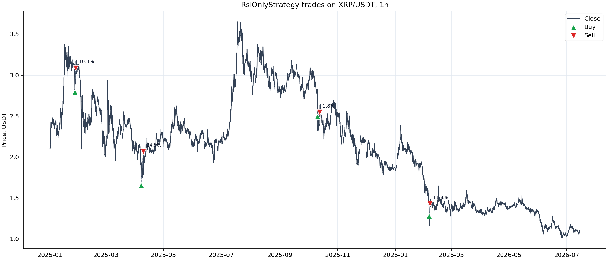
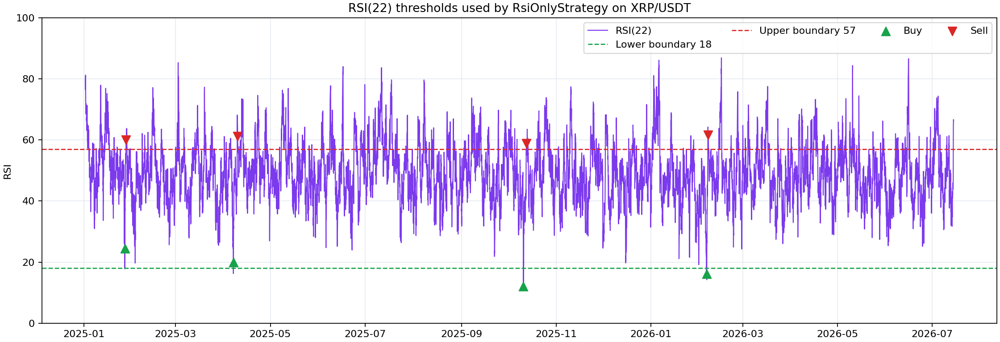
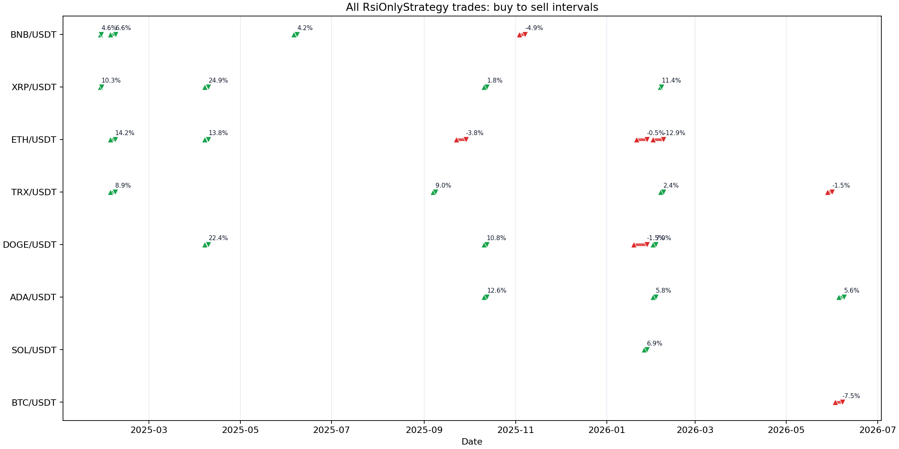
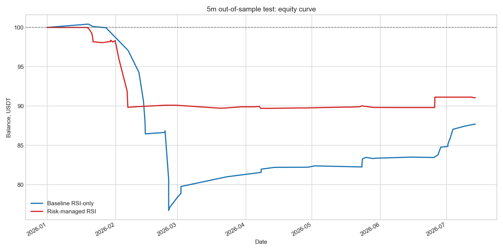
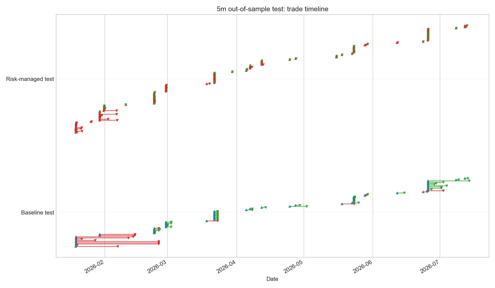
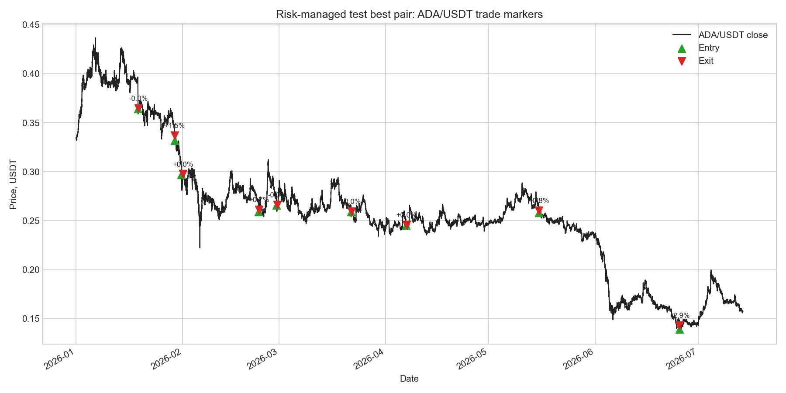

RSI-only strategy: Freqtrade Hyperopt
Goal
This experiment builds the smallest useful RSI strategy for Freqtrade: only one indicator, no trend filters, no extra guards, and no ML. The strategy is long-only and mean-reverting:
- enter long when RSI crosses below the lower RSI boundary;
- exit long when RSI crosses above the upper RSI boundary;
- keep ROI effectively disabled with
minimal_roi = {"0": 100}; - keep an emergency-wide stoploss at
-0.99, so normal exits are RSI exits.
The implementation lives in user_data/strategies/rsi_only/RsiOnlyStrategy.py, with a dedicated config in user_data/strategies/rsi_only/config_rsi_only_1h.json.
Can Freqtrade optimize RSI parameters?
Yes. Freqtrade can optimize RSI boundaries and RSI period internally with Hyperopt. The strategy exposes the parameters as IntParameter:
| Parameter | Hyperopt space | Range | Best value |
|---|---|---|---|
buy_rsi_period |
buy |
7-30 | 22 |
buy_rsi_lower |
buy |
10-45 | 18 |
sell_rsi_upper |
sell |
55-90 | 57 |
The period is the subtle part: because RSI period changes the indicator itself, the strategy calculates RSI columns with self.buy_rsi_period.range. This is a standard Freqtrade pattern for optimizing indicator periods without recalculating the whole dataframe incorrectly for every epoch.
Reproduction
The commands below were run from C:\WorkPrograms\TimeAnalysis.
uv sync --devFreqtrade Hyperopt needs optuna, cmaes, and filelock in addition to the normal bot dependencies. These are now tracked in pyproject.toml, so a normal uv sync --dev is enough.
uv run freqtrade list-strategies --userdir user_data
.\.venv\Scripts\ruff.exe check user_data\strategies\rsi_only\RsiOnlyStrategy.py--strategy-path user_data/strategies is intentionally omitted. With --userdir user_data, Freqtrade already scans user_data/strategies; passing the same path again causes duplicate strategy entries.
uv run freqtrade download-data --userdir user_data --config user_data/strategies/rsi_only/config_rsi_only_1h.json --timeframes 1h --timerange 20250101-20260714Downloaded data:
- exchange: Binance spot;
- timeframe:
1h; - pairs:
BTC/USDT,ETH/USDT,BNB/USDT,XRP/USDT,SOL/USDT,TRX/USDT,DOGE/USDT,ADA/USDT,LINK/USDT,AVAX/USDT; - downloaded candles: 13,434 per pair.
Hyperopt command:
uv run freqtrade hyperopt --userdir user_data --config user_data/strategies/rsi_only/config_rsi_only_1h.json --strategy RsiOnlyStrategy --timeframe 1h --timerange 20250101-20260714 --spaces buy sell --hyperopt-loss ProfitDrawDownHyperOptLoss -e 300 --random-state 42 --min-trades 10 -j -2Best Hyperopt epoch: 277/300, objective -56.89194, 26 trades, 19 wins, 7 losses.
Final backtest command:
uv run freqtrade backtesting --userdir user_data --config user_data/strategies/rsi_only/config_rsi_only_1h.json --strategy RsiOnlyStrategy --timeframe 1h --timerange 20250101-20260714 --export trades --breakdown month --cache noneArtifacts:
- Hyperopt result:
user_data/hyperopt_results/strategy_RsiOnlyStrategy_2026-07-14_21-55-13.fthypt; - exported parameters:
user_data/strategies/rsi_only/RsiOnlyStrategy.json; - final backtest:
user_data/backtest_results/backtest-result-2026-07-14_22-02-06.zip.
Visual inspection
Freqtrade has two practical ways to inspect buy and sell points.
The preferred interactive path is FreqUI:
uv run freqtrade webserver --userdir user_data --config user_data/strategies/rsi_only/config_rsi_only_1h.jsonThen open http://127.0.0.1:8080, log in with the local credentials from the config, and use the Backtesting view. FreqUI can load previous backtest results from user_data/backtest_results, including backtest-result-2026-07-14_22-02-06.zip. Open a pair chart from that result and load the strategy plot configuration. RsiOnlyStrategy exposes an RSI subplot with rsi, rsi_lower, and rsi_upper, so entries, exits, and RSI thresholds can be inspected on the same chart.
For the static research report, the saved backtest zip and OHLCV feather data were converted into PNG figures.

The best pair was XRP/USDT, so the first plot focuses on its four trades. Green triangles are entries, red triangles are exits, and labels show trade profit.

The RSI plot shows why these trades fired: entries happen when RSI(22) crosses below the lower boundary 18, and exits happen when RSI(22) crosses above the upper boundary 57.

The timeline plot shows all backtest trades as buy-to-sell intervals. Green intervals are profitable trades, red intervals are losing trades.
The legacy command-line plotting path also exists:
uv run freqtrade plot-dataframe --userdir user_data --config user_data/strategies/rsi_only/config_rsi_only_1h.json --strategy RsiOnlyStrategy --timeframe 1h --pairs XRP/USDT --export-filename user_data/backtest_results/backtest-result-2026-07-14_22-02-06.zipFreqtrade documentation currently recommends FreqUI over plot-dataframe for plotting, because the CLI plotting commands are in maintenance mode.
In-sample bias warning
The +60.71% result below is useful as a first proof-of-concept, but it is likely optimistic. The same timerange was used for Hyperopt and for the final backtest, so the strategy was trained and evaluated on the same candles. This can overfit RSI boundaries and period selection to historical noise. Treat the 1h result as an in-sample research result, not as evidence that the strategy is robust out-of-sample.
Backtest results
The final backtest automatically loaded RsiOnlyStrategy.json.
| Metric | Value |
|---|---|
| Backtest period | 2025-01-05 04:00:00 - 2026-07-14 00:00:00 |
| Starting balance | 100 USDT |
| Final balance | 160.714 USDT |
| Absolute profit | 60.714 USDT |
| Total profit | 60.71% |
| Market change | -52.46% |
| Trades | 26 |
| Win / draw / loss | 19 / 0 / 7 |
| Win rate | 73.1% |
| Average profit per trade | 5.79% |
| Average duration | 3 days, 2:18:00 |
| Profit factor | 4.60 |
| Sharpe | 0.57 |
| Sortino | 0.99 |
| Calmar | 30.76 |
| SQN | 3.20 |
| Max account drawdown | 11.516 USDT / 6.81% |
| Drawdown duration | 119 days, 14:00:00 |
| Best pair | XRP/USDT, 20.05% |
| Worst pair | BTC/USDT, -4.02% |
Per-pair result:
| Pair | Trades | Profit, USDT | Profit | Win rate |
|---|---|---|---|---|
| XRP/USDT | 4 | 20.055 | 20.05% | 100.0% |
| DOGE/USDT | 4 | 16.631 | 16.63% | 75.0% |
| ADA/USDT | 3 | 12.009 | 12.01% | 100.0% |
| TRX/USDT | 4 | 7.826 | 7.83% | 75.0% |
| SOL/USDT | 1 | 3.494 | 3.49% | 100.0% |
| BNB/USDT | 4 | 3.227 | 3.23% | 75.0% |
| ETH/USDT | 5 | 1.497 | 1.50% | 40.0% |
| LINK/USDT | 0 | 0.000 | 0.00% | 0.0% |
| AVAX/USDT | 0 | 0.000 | 0.00% | 0.0% |
| BTC/USDT | 1 | -4.023 | -4.02% | 0.0% |
Monthly breakdown:
| Month | Trades | Profit, USDT | Win / loss |
|---|---|---|---|
| 2025-01 | 2 | 4.965 | 2 / 0 |
| 2025-02 | 3 | 10.345 | 3 / 0 |
| 2025-03 | 0 | 0.000 | 0 / 0 |
| 2025-04 | 3 | 23.482 | 3 / 0 |
| 2025-05 | 0 | 0.000 | 0 / 0 |
| 2025-06 | 1 | 1.905 | 1 / 0 |
| 2025-07 | 0 | 0.000 | 0 / 0 |
| 2025-08 | 0 | 0.000 | 0 / 0 |
| 2025-09 | 2 | 2.380 | 1 / 1 |
| 2025-10 | 3 | 12.018 | 3 / 0 |
| 2025-11 | 1 | -2.485 | 0 / 1 |
| 2025-12 | 0 | 0.000 | 0 / 0 |
| 2026-01 | 3 | 2.477 | 1 / 2 |
| 2026-02 | 5 | 7.444 | 4 / 1 |
| 2026-03 | 0 | 0.000 | 0 / 0 |
| 2026-04 | 0 | 0.000 | 0 / 0 |
| 2026-05 | 1 | -0.811 | 0 / 1 |
| 2026-06 | 2 | -1.005 | 1 / 1 |
5m train/test extension
To reduce the in-sample bias, the next experiment uses 5m candles and a fixed train/test split:
- exchange: Binance spot;
- timeframe:
5m; - pairs: the same 10 USDT pairs used by the 1h experiment;
- data range:
2025-01-01-2026-07-14; - train:
2025-01-01-2025-12-31; - test:
2026-01-01-2026-07-14; max_open_trades = 10;- test parameters are not reoptimized.
The new files are:
user_data/strategies/rsi_only_5m/config_rsi_only_5m.json;user_data/strategies/rsi_only_risk_managed_5m/config_rsi_risk_managed_5m.json;user_data/strategies/rsi_only_5m/RsiOnly5mStrategy.py;user_data/strategies/rsi_only_risk_managed_5m/RsiOnlyRiskManaged5mStrategy.py.
The risk-managed version still uses RSI as the only market indicator, but it is not a strict RSI-only exit system anymore. It adds Freqtrade risk controls: optimized ROI, stoploss, trailing stop, and protections (CooldownPeriod, MaxDrawdown, LowProfitPairs). Final risk-managed backtests were run with --enable-protections.
Downloaded 5m data contains 10 *-5m.feather files with 160,999 candles per pair, from 2025-01-01 00:00:00+00:00 to 2026-07-14 00:30:00+00:00.
5m reproduction commands
uv run freqtrade download-data --userdir user_data --config user_data/strategies/rsi_only_risk_managed_5m/config_rsi_risk_managed_5m.json --timeframes 5m --timerange 20250101-20260714Baseline RSI-only Hyperopt on train:
uv run freqtrade hyperopt --userdir user_data --config user_data/strategies/rsi_only_5m/config_rsi_only_5m.json --strategy RsiOnly5mStrategy --timeframe 5m --timerange 20250101-20260101 --spaces buy sell --hyperopt-loss ProfitDrawDownHyperOptLoss -e 300 --random-state 42 --min-trades 50 -j 8 --analyze-per-epochRisk-managed Hyperopt on train:
uv run freqtrade hyperopt --userdir user_data --config user_data/strategies/rsi_only_risk_managed_5m/config_rsi_risk_managed_5m.json --strategy RsiOnlyRiskManaged5mStrategy --timeframe 5m --timerange 20250101-20260101 --spaces buy sell roi stoploss trailing protection --hyperopt-loss ProfitDrawDownHyperOptLoss -e 300 --random-state 42 --min-trades 50 -j 8 --analyze-per-epochThe baseline run completed all 300 epochs. The risk-managed search hit Windows resource/time limits after saving 41 epochs, so the risk-managed result should be treated as a partial pilot optimization, not as a fully comparable 300-epoch search.
Backtests:
uv run freqtrade backtesting --userdir user_data --config user_data/strategies/rsi_only_5m/config_rsi_only_5m.json --strategy RsiOnly5mStrategy --timeframe 5m --timerange 20250101-20260101 --export trades --breakdown month --cache none --notes rsi_5m_baseline_train
uv run freqtrade backtesting --userdir user_data --config user_data/strategies/rsi_only_5m/config_rsi_only_5m.json --strategy RsiOnly5mStrategy --timeframe 5m --timerange 20260101-20260714 --export trades --breakdown month --cache none --notes rsi_5m_baseline_test
uv run freqtrade backtesting --userdir user_data --config user_data/strategies/rsi_only_risk_managed_5m/config_rsi_risk_managed_5m.json --strategy RsiOnlyRiskManaged5mStrategy --timeframe 5m --timerange 20250101-20260101 --export trades --breakdown month --cache none --enable-protections --notes rsi_5m_risk_train
uv run freqtrade backtesting --userdir user_data --config user_data/strategies/rsi_only_risk_managed_5m/config_rsi_risk_managed_5m.json --strategy RsiOnlyRiskManaged5mStrategy --timeframe 5m --timerange 20260101-20260714 --export trades --breakdown month --cache none --enable-protections --notes rsi_5m_risk_test5m optimized parameters
Baseline RSI-only, trained on 2025:
| Parameter | Value |
|---|---|
buy_rsi_period |
19 |
buy_rsi_lower |
13 |
sell_rsi_upper |
79 |
minimal_roi |
{"0": 100} |
stoploss |
-0.99 |
max_open_trades |
10 |
Risk-managed RSI, partial 41-epoch pilot trained on 2025:
| Parameter | Value |
|---|---|
buy_rsi_period |
22 |
buy_rsi_lower |
16 |
sell_rsi_upper |
69 |
minimal_roi |
{"0": 0.161, "30": 0.029, "83": 0.015, "148": 0} |
stoploss |
-0.342 |
trailing_stop |
true |
trailing_stop_positive |
0.184 |
trailing_stop_positive_offset |
0.186 |
protection_cooldown_stop_duration |
20 |
protection_max_allowed_drawdown |
0.089 |
protection_max_drawdown_stop_duration |
215 |
protection_low_profit_required_profit |
0.009 |
protection_low_profit_stop_duration |
36 |
max_open_trades |
10 |
5m baseline RSI-only
| Split | Trades | Profit | Max drawdown | Win rate | Profit factor | Sharpe | Sortino | Best pair | Worst pair |
|---|---|---|---|---|---|---|---|---|---|
| Train | 57 | 53.169 USDT / 53.17% | 2.276 USDT / 2.07% | 66.7% | 10.06 | 1.22 | 8.57 | ADA/USDT, 9.18% | SOL/USDT, 1.58% |
| Test | 57 | -12.314 USDT / -12.31% | 23.712 USDT / 23.61% | 71.9% | 0.51 | -1.04 | -0.82 | XRP/USDT, 1.26% | SOL/USDT, -2.47% |
The baseline overfit signal is clear: strong train performance did not survive the untouched 2026 test window. The win rate stayed high, but the few losing trades were large enough to dominate total PnL.
5m risk-managed RSI
| Split | Trades | Profit | Max drawdown | Win rate | Profit factor | Sharpe | Sortino | Best pair | Worst pair |
|---|---|---|---|---|---|---|---|---|---|
| Train | 94 | -1.212 USDT / -1.21% | 8.687 USDT / 8.54% | 60.6% | 0.91 | -0.10 | -0.08 | BNB/USDT, 1.60% | DOGE/USDT, -3.49% |
| Test | 89 | -8.936 USDT / -8.94% | 10.291 USDT / 10.29% | 57.3% | 0.22 | -1.99 | -1.43 | ADA/USDT, 0.54% | AVAX/USDT, -3.08% |
The risk-managed test lost less money and had a smaller account drawdown than the baseline test, but it also had a worse profit factor and worse Sharpe / Sortino. Because the risk-managed Hyperopt was partial, this is best read as a directional robustness check rather than a final verdict on the risk controls.
5m test comparison
| Metric | Baseline RSI-only | Risk-managed RSI |
|---|---|---|
| Test profit | -12.314 USDT / -12.31% | -8.936 USDT / -8.94% |
| Max account drawdown | 23.712 USDT / 23.61% | 10.291 USDT / 10.29% |
| Trades | 57 | 89 |
| Win rate | 71.9% | 57.3% |
| Profit factor | 0.51 | 0.22 |
| Sharpe | -1.04 | -1.99 |
| Sortino | -0.82 | -1.43 |
| Market change | -34.67% | -34.67% |
Monthly test breakdown:
| Month | Baseline trades | Baseline profit, USDT | Risk trades | Risk profit, USDT |
|---|---|---|---|---|
| 2026-01 | 3 | -0.043 | 18 | -2.057 |
| 2026-02 | 13 | -22.843 | 22 | -7.840 |
| 2026-03 | 14 | 3.887 | 11 | -0.201 |
| 2026-04 | 4 | 1.216 | 11 | -0.145 |
| 2026-05 | 10 | 1.144 | 12 | 0.068 |
| 2026-06 | 5 | 1.426 | 12 | 1.306 |
| 2026-07 | 8 | 2.899 | 3 | -0.067 |

The equity curve shows the main difference: risk controls reduced the February capital drop, while the baseline recovered more later in the test window but still finished lower overall.

The timeline shows that the risk-managed version trades more frequently and closes many positions quickly through ROI/trailing/protection-influenced behavior. The baseline trades less often but holds some losing February positions longer.

The best risk-managed test pair was ADA/USDT, but even that pair only contributed +0.537 USDT (+0.54%). This reinforces that the out-of-sample edge was weak in the 2026 test window.
5m conclusion
The train/test split changes the interpretation materially. The original 1h result and the 5m baseline train result both look attractive in-sample, but the untouched 2026 test window is negative. The risk-managed variant reduced test drawdown from 23.61% to 10.29% and improved absolute test PnL from -12.31% to -8.94%, but it did not produce a profitable or statistically convincing strategy. The next research step should be a proper walk-forward optimization with multiple rolling windows, not a single train/test split.
Stoploss -5% sensitivity check
After the train/test experiment, a fixed 5% stoploss was checked against the current optimized parameters. In Freqtrade this is configured as stoploss = -0.05; a positive 0.05 is not the strategy value.
This was a post-hoc sensitivity check, not a fresh Hyperopt run. The test used a temporary config-level stoploss override, which Freqtrade applies after loading strategy parameters from *.json.
| Strategy / window | Original result | With stoploss = -0.05 |
Change |
|---|---|---|---|
RsiOnly5mStrategy, 2026 test |
-12.31%, DD 23.61% | +4.93%, DD 8.00% | Better |
RsiOnlyRiskManaged5mStrategy, 2026 test |
-8.94%, DD 10.29% | -5.01%, DD 6.41% | Smaller loss, smaller drawdown |
RsiOnlyStrategy, 1h in-sample full period |
+60.71%, DD 6.81% | +3.08%, DD 26.30% | Worse |
Detailed 5m test metrics:
| Strategy | Trades | Profit | Max drawdown | Win rate | Profit factor | Sharpe | Sortino |
|---|---|---|---|---|---|---|---|
| Baseline RSI-only, original | 57 | -12.314 USDT / -12.31% | 23.712 USDT / 23.61% | 71.9% | 0.51 | -1.04 | -0.82 |
Baseline RSI-only, -5% stoploss |
69 | 4.934 USDT / 4.93% | 8.004 USDT / 8.00% | 63.8% | 1.46 | 1.07 | 3.07 |
| Risk-managed RSI, original | 89 | -8.936 USDT / -8.94% | 10.291 USDT / 10.29% | 57.3% | 0.22 | -1.99 | -1.43 |
Risk-managed RSI, -5% stoploss |
90 | -5.006 USDT / -5.01% | 6.413 USDT / 6.41% | 53.3% | 0.34 | -2.44 | -2.17 |
The fixed -5% stoploss is promising for the 5m baseline because it turns the 2026 test from negative to positive and cuts drawdown sharply. However, it does not transfer cleanly to the 1h strategy, and the risk-managed strategy remains negative. Since this check was made after seeing the test result, it also starts to use the test set as a design signal. The next defensible experiment is to add stoploss to Hyperopt on the train window only, then evaluate the selected stoploss on a fresh untouched test window or through rolling walk-forward splits.
Artifacts from this check:
user_data/backtest_results/backtest-result-2026-07-15_12-11-46.zip:RsiOnly5mStrategy, 2026 test,stoploss = -0.05;user_data/backtest_results/backtest-result-2026-07-15_12-12-28.zip:RsiOnlyRiskManaged5mStrategy, 2026 test,stoploss = -0.05;user_data/backtest_results/backtest-result-2026-07-15_12-13-52.zip:RsiOnlyStrategy, 1h full period,stoploss = -0.05.
Notes and limitations
The optimized strategy is very selective: only 26 trades over about 554 backtest days. That selectivity is probably why drawdown looks controlled, but it also means the estimate is fragile.
This is an in-sample Hyperopt plus final backtest on the same timerange. The numbers are useful for checking whether the RSI-only idea is worth deeper research, but they are not evidence of live robustness. A better next experiment is a walk-forward split: optimize on an earlier window, then test untouched data from a later window.